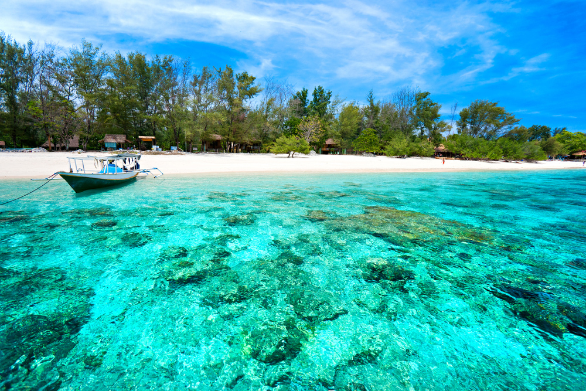

Gili Trawangan
Post by dayat, Sunday 06 Juny 2018
Lombok memiliki berjut pesona alam yang luar biasa yang tak kalah indah dengan pesona keindahan alam yang ada di Bali. Selain objek darat yang mempesona seperti gunung rinjani, padang savana, air terjun dan yang lainnya, Lombok juga memiliki pesona alam berupa pantai yang sangat indah. Sebut saja sebuah pulau kecil dipinggiran utama pulau lombok yang megah, Gili Trawangan.
Gili Terawangan merupakan sebuah pulau kecil yang termasuk dalam daerah kepulauan Lombok. Di sampingnya juga terdapat 2 pulau kecil lainnya yakni Pulau Gili Menu dan juga Pulau Gili Air. Ketiga pulau tersebut memiliki keindahan alam yang sama-sama membuat mata anda menjadi terpukau. Namun yang paling dikenal oleh para wisatawan adalah Pulau Gili Trawangan. Mungkin karena lokasinya yang paling dekat dengan Bali sehingga Gili Terawangan menjadi destinasi pilihan bagi para wisatawan yang ada di Bali.
Setiap harinya, ada saja wisatawan yang datang berkunjung ke pulau ini. Namun secara umum, para wisatawan yang datang kebanyakan adalah wisatawan mancanegara. Jarang ada wisatawan lokal yang berkunjung ke Gili Trawangan, akan tetapi jarang disini tidaklah sangat jarang, namun bisa dibilang persentase untuk turis asing dan turis lokal sebanyak 80/20%.
Destinasi wisata yang paling terkenal di pulau ini adalah wisata pantai, karena memang pulau ini cukup kecil dengan panjang 3 Kilometer dan lebar hanya 2 Kilometer .Cukup dengan hanya berjalan kaki saja selama 2 jam, anda sudah bisa mengelilingi pulau ini. Namun jika dibandingkan dengan 2 pulau lain yang ada di sebelahnya, Pulau Gili Trawangan memiliki luas yang paling besar.
Dengan pantai pasir putihnya yang menawan, anda bisa bersantai-santai dibawah terik matahari atau bisa juga duduk di bawah tenda yang disediakan. Selain itu pantai di sana memiliki air yang sangat jernih dan diimbangi dengan ombak yang relatif kecil, sekilah nampak sama dengan wisata pulau menjangan yang ada di Bali. Anda bisa berenang bebas di pantai ini menikmati kesegaran air laut, akan tetapi tetap ada batasan-batasan untuk anda yang berenang di pantai ini.
Yang menarik di Gili Trawangan adalah dapat melihat momen Sunset atau matahari tenggelam secara langsung. Momen ini dapat anda lihat langsung di pantai yang khusus diperuntukan untuk para wisatawan yang ingin melihat Sunset. Lokasinya tepat berada di sebelah barat pulau yang diberinama Sunset View.

Sunset Di Gili Trawangan
Yang menarik di Gili Trawangan adalah dapat melihat momen Sunset atau matahari tenggelam secara langsung. Momen ini dapat anda lihat langsung di pantai yang khusus diperuntukan untuk para wisatawan yang ingin melihat Sunset. Lokasinya tepat berada di sebelah barat pulau yang diberinama Sunset View.
Disana sebelum momen Sunset tiba, anda dapat bersantai dan bercengkrama ria bersama sahabat-sahabat anda. Akan ada banyak wisatawan yang datang khususnya di Sore hari dengan tujuan yang sama yakni melihat Sunset. Pada saat momen sunset tiba, siap-siaplah mengeluarkan kamera anda sebagai media untuk mengabadikan momen indah tersebut.
Pantai Berpasir Putih
Pulau Giri Trawangan dikelilingi oleh pantai yang memiliki pasir yang berwarna putih, sama halnya dengan kebanyakan pantai-pantai yang ada di Bali. Di Hamparan pantai yang luas ini, anda dapat melakukan apa saja keinginan anda mulai dari bermain pasir, duduk-duduk santai dan masih banyak lagi. Dari kejauhan akan napak megahnya Gunung Rinjani dan Gunung Agung yang ada di Bali.
Keindahan pantai diimbangi dengan keindahan lautnya yang menawan. Ombak yang datang silih berganti, namun dengan kekuatan yang ringan membuat suasana menjadi sangat teduh dan damai. Air laut yang bening seakan mengajak kita untuk masuk kedalam dan melihat kekayaan isi dari biota didalamnya.
Sumber : https://wisatabaliutara.com/2016/04/gili-trawangan-lombok.html/
Rekomendasi Tempat Wisata
Air Terjun Oi Marai
Pulau Kenawa
Air Terjun Benang Kelambu
Air Terjun Tiu Kelep
Pantai Pink Lombok